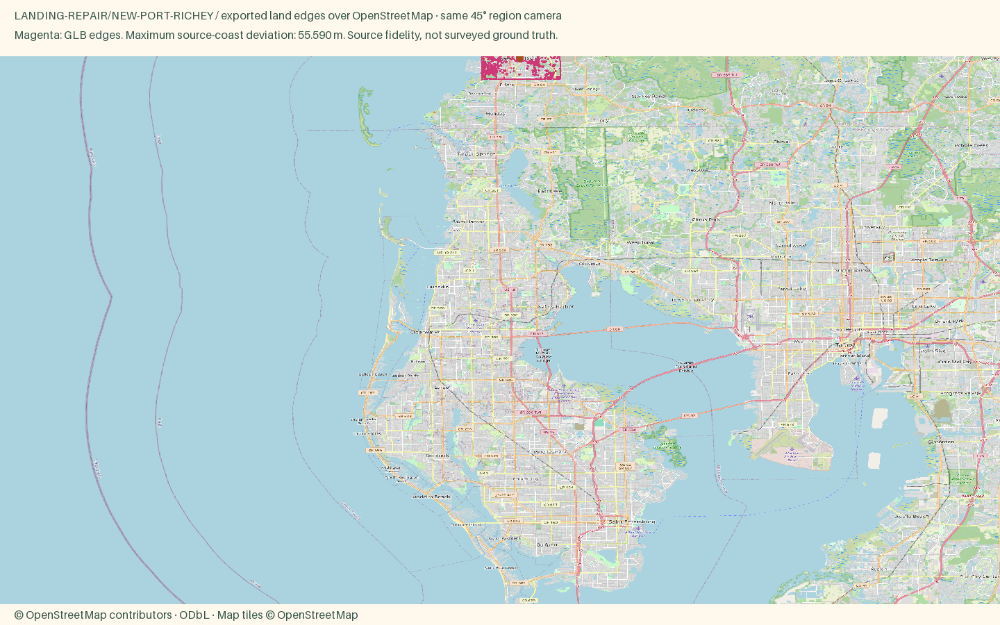

St. Pete and the Clearwater Beaches
Open atlas · Accuracy CSV · Sourced medians
Region
New Port Richey
Open districtA small river town with a 1920s downtown that has been adding breweries, restaurants and a restored theater.
Source alignment

Manual fixes
- Downtown uses the OSM Saint Petersburg place-label point as its representative anchor, not a surveyed district centroid.
- Old Northeast recipe mixes historic porch-house and Mediterranean colors; per-building facade colors are illustrative.
- Expanded inputs to the existing St. Pete/Clearwater catalog towns; retained Downtown and Old Northeast as separate St. Petersburg districts.
- Existing Census land context continues beyond the OSM data rectangle, avoiding artificial water edges at the package boundary.
- Framed the long peninsula by its north/south district extents, with a phone offset that leaves the southern towns above the controls. Buildings and anchors remain at source positions.
- Placed Downtown and Old Northeast first in the St. Pete district choices so Town opens on St. Pete instead of an unrelated northern town.
- The shared exporter needed lossless indexing of repeated overview vertices to meet 4 MB. Every decoded triangle position was compared exactly; Miami was revalidated.
- Landing source envelope extended to the fixed frame plus 600 m; original camera, hero, palette and district styles retained.
Buildings include imagery-derived Microsoft Global ML Building Footprints (CDLA Permissive 2.0). Negative local IDs are not OSM IDs. Footprint provenance. The OSM overlay validates coast and district anchors, not the supplemental roofs.